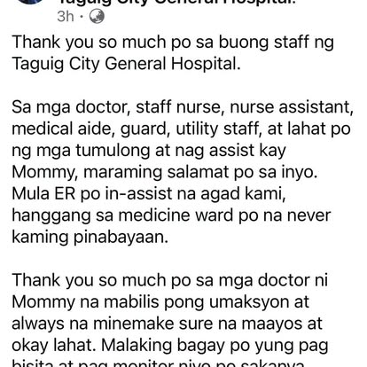
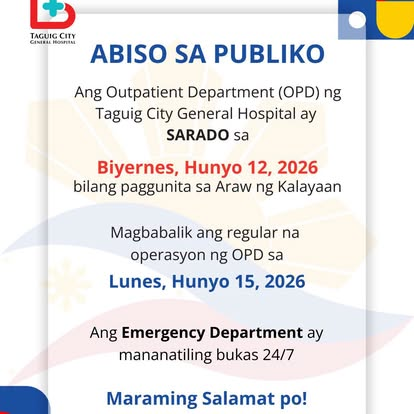
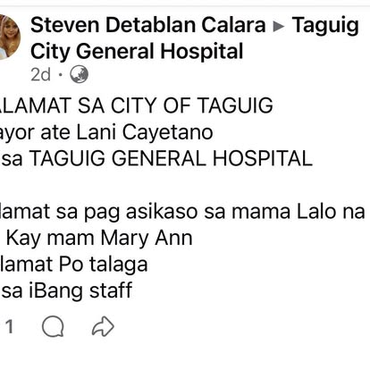

Internal Medicine / Family Medicine
General outpatient consultations for adults and families — first point of care at TCGH.
Mon–Fri · 8:00 AM – 5:00 PM
City of Taguig · Public healthcare
The second LGU-owned hospital of Taguig — free, quality, and accessible healthcare for Taguigeños along C6 Road, Barangay Hagonoy. Outpatient Department open Monday to Friday.
Consultations and diagnostic services at TCGH — schedules and specialty clinic days follow official Facebook and Taguig.gov.ph announcements.
General outpatient consultations for adults and families — first point of care at TCGH.
Mon–Fri · 8:00 AM – 5:00 PM
Child health consultations and follow-ups for young patients in Taguig.
Mon–Fri · 8:00 AM – 5:00 PM
Women's health, prenatal care, and OB-Gyn outpatient services.
Mon–Fri · 8:00 AM – 5:00 PM
Heart and cardiovascular outpatient consultations.
Mon, Tue & Fri · 8:00 AM – 5:00 PM
Respiratory care and surgical outpatient clinics on designated days.
Pulmo Tue–Wed · Surgery Tue–Fri (see Facebook for shifts)
Hematology, clinical chemistry, X-ray, ultrasound, CT scan, ECG, spirometry, and nebulization.
Lab · +63 964 063 02 · Radiology · +63 968 401 5862
Recent visuals from the official Facebook page — public advisories, community health programs, and patient feedback.



Taguig City General Hospital is the second city-owned hospital of Taguig, located along C6 Road, Barangay Hagonoy. The Outpatient Department opened to the public on January 30, 2025, bringing free, quality, and accessible healthcare closer to Taguigeños.
The four-storey facility aims to reach Level 2 hospital status — a place of healing, dignity, and hope for every patient who enters. Follow the official Facebook page for real-time advisories, vaccination drives, and specialty clinic schedules.
Reach the Outpatient Department or email the hospital for inquiries, appointments, and general information.
OPD phone
+63 968 377 6440
Email
tgh@taguig.gov.ph
Laboratory
+63 964 063 02
Radiology
+63 968 401 5862
Address
506 C6 Road, Barangay Hagonoy, Taguig City, Metro Manila, Philippines
Follow us on Facebook for advisories, health programs, and hospital updates.